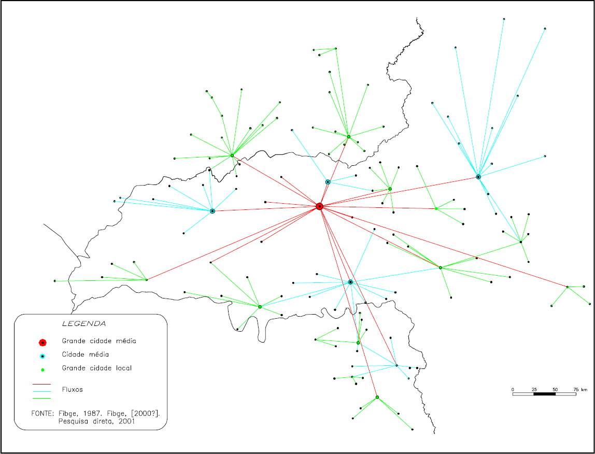

O cartograma acima, que representa a área de polarização de uma cidade categorizada como grande cidade média (lugar
central), retrata a estrutura hierárquica e expressa a organização espacial da rede urbana, assim como a forte
hierarquização da grande cidade média sobre os demais centros urbanos. Um dos propositores da idéia de centralidade
dos lugares, consolidada na década de 30 do século passado, foi o geógrafo alemão Walter Christaller. Segundo sua
teoria, a grande cidade média de hoje corresponderia à capital regional, assim como as cidades médias, a centros subregionais.
A respeito da teoria das localidades centrais e da estrutura da rede urbana, representada no cartograma, julgue
os itens a seguir.
-
Segundo Christaller, a centralidade dos lugares seria uma hierarquização da função desempenhada por uma cidade
em um conjunto de cidades, que não seria, obrigatoriamente, uma região.
-
As pequenas cidades geram, via de regra, expressiva densidade de centros que se situam a uma pequena distância
média entre si, ainda que esta possa variar de acordo com a densidade demográfica da região em que se localizam.
-
A hierarquia entre as cidades resultaria da tendência natural de centralização em uma rede de interdependência em
que várias cidades menores estão ligadas à cidade central.
-
No cartograma, observa-se que o número de pequenos centros é baixo em relação aos centros maiores, sendo
elevada a distância média entre eles.
-
No cartograma, a localidade central de nível hierárquico mais elevado possui ampla região de influência: nela, estão
contidos os centros de nível imediatamente abaixo.
Assinale a opção correta.
-
Apenas os itens I e II estão certos.
-
Apenas os itens II, III e IV estão certos.
-
Apenas os itens III, IV e V estão certos.
-
Apenas os itens I, II, III e V estão certos.
-
Todos os itens estão certos.